RIC screens, frame by frame
Every animated screen of the RIC payment terminal, rendered frame by frame from the device's own firmware: receive and send flows, card issue and wipe, BLE pairing, WiFi connect, and firmware update. Each section shows one representative still at large size, and a strip of evenly spaced frames from the same animation underneath.
- Rendered from the RIC firmware's own animation code (firmware 1.0.16, commit
afadab5) with the in-repo host preview tool. The renderer is deterministic and pixel exact; no device and no browser were used. - Every image is 320x240, the native resolution of the ILI9341 panel. Stills are upscaled about 1.5x with nearest neighbour (pixelated) scaling; frames in the strips are shown at half size.
- Scenario text and amounts are sample values (35, 2,100 and 125,000 sats; device name RIC-7F3A). A real device shows live values; layout and animation are identical.
- This set covers the animated Motion screens only. Static screens (amount and numpad, QR payment screen, PIN pads, settings menu, WiFi setup, error screen, Firmware & Updates page, card read result) are not included in these renders.
01Payment received (full flow)
The full received payment, start to finish. The machine shows Processing payment with orange gears turning around a lightning bolt hub, then Confirming payment and Settling over Lightning with the amount (35 sats) at the bottom and bitcoin coins being pulled into the machine, then Finishing up. Do not tap again. while the wallet commits, and finally the full-screen green success: a white check badge, 35 sats, and Payment received. Appears after a customer taps an openLN card and the Lightning invoice settles. The 35 sats shown here is the preview's sample amount; a real device shows the real invoice amount.
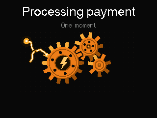
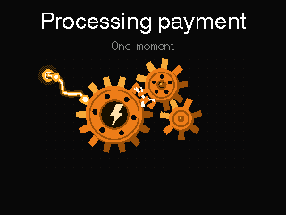
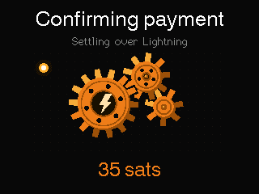
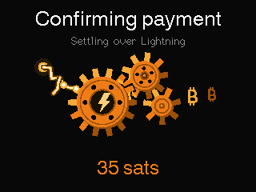
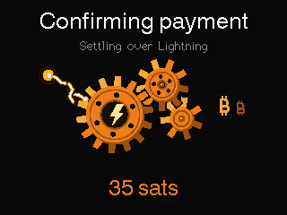
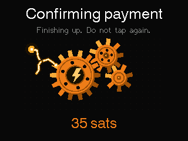
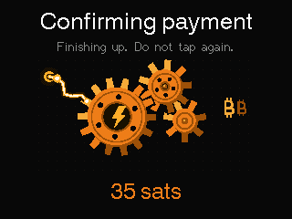
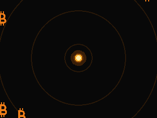


Frames 1-16 of the animation, sampled evenly across the 8.6 s scenario.
02Large payment (125,000 sats)
A larger sale, showing the five-figure amount path. The same confirming flow: Confirming payment, Settling over Lightning, and 125,000 sats (the thousands separator is drawn by hand), then the received celebration with the amount counting up to 125,000 sats and Payment received. Appears on any sale with a larger amount. One frame in the strip catches the count-up mid-flight at 108,078 sats.

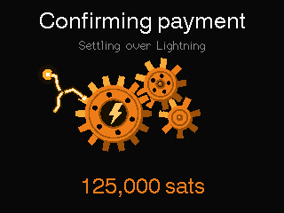
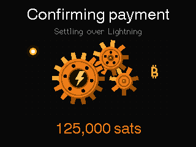
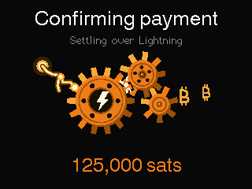
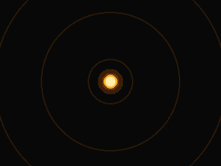
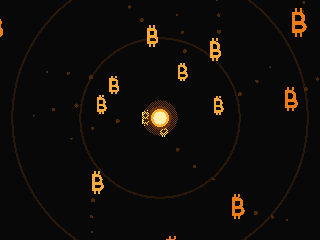
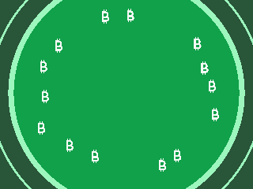
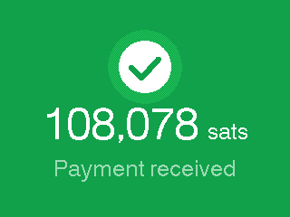


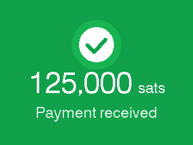

Frames 1-12 of the animation, sampled evenly across the 4.5 s scenario.
03Payment received (celebration)
The received payment celebration on its own. A dark screen with an orange magnet core draws bitcoin coins in, there is a flash, then a green flood and shock ring, and finally the green hold: check badge, 35 sats, and Payment received. Appears from the success result screen after a payment is received; the final frame holds until it is replaced.

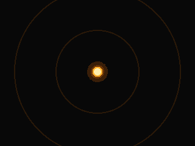
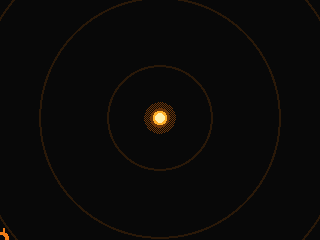
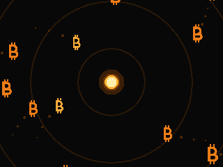
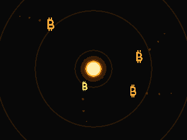
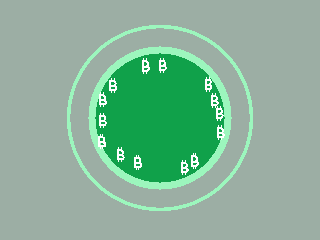
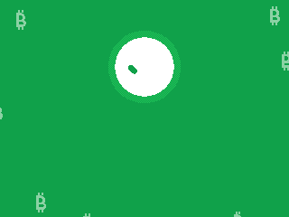
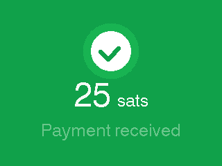
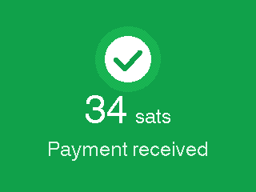


Frames 1-12 of the animation, sampled evenly across the 2.4 s scenario.
04Payment sent (celebration)
The sent payment celebration on its own. Coins are blasted away from the center of the dark screen, followed by a flash, a green flood, and the green hold: check badge, 2,100 sats, and Payment sent. The flash comes earlier in this scene than in the received version. Appears after a successful send; the final frame holds.

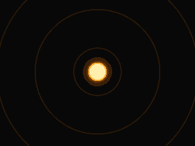
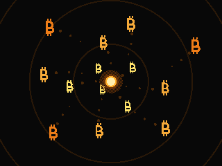
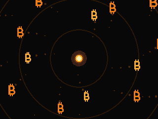
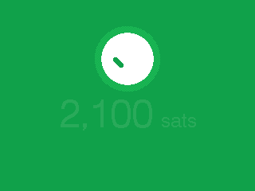
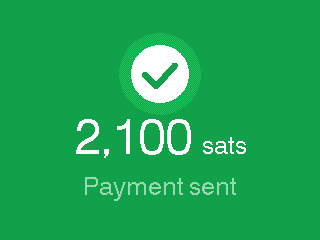


Frames 1-12 of the animation, sampled evenly across the 2.4 s scenario.
05Payment sent (full flow)
The send (payout) flow. Sending payment, To the tapped card, and 2,100 sats with the gears running while coins are fed into the machine, then the sent celebration: blast out, green flood, and 2,100 sats with Payment sent. Appears when the merchant taps an openLN card to pay out to it.

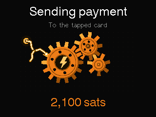
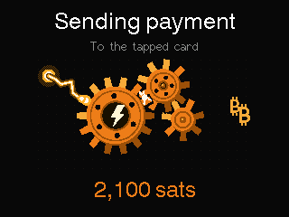
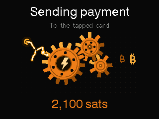
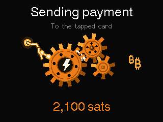
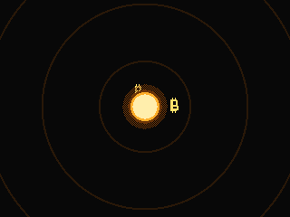
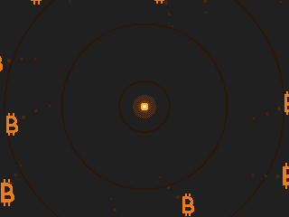
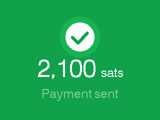


Frames 1-12 of the animation, sampled evenly across the 5.8 s scenario.
06Reconnecting while confirming
Confirming payment while the connection hiccups. The title stays Confirming payment, the subtitle reads Reconnecting..., the gears are dimmed to a muted brown and turn slower, and the amount (35 sats) stays at the bottom. There is no Cancel button in this state. Appears while the invoice is settling but the link is down, and in the WiFi lost, invoice kept reconnecting variant.

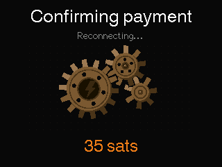
Frames 1-12 of the animation, sampled evenly across the 3.0 s scenario.
07Card issued (writing a card)
The Issue Card flow. Writing card and Keep the card on the reader, with an openLN card graphic, orange NFC emission dots, and a three-step tracker (Write data, Authenticate, Secure card) that turns each step green as it completes. The finale shows the card with a green check badge, Card issued, and Ready for payments. Appears in the Issue Card flow from the settings menu when a blank card is tapped.

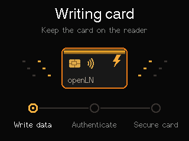
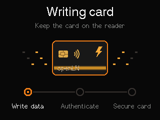
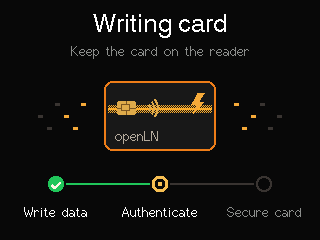
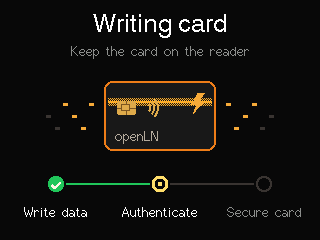
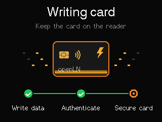
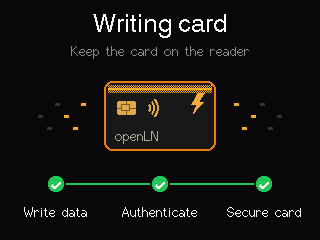
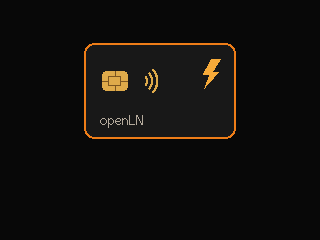
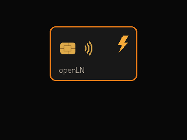
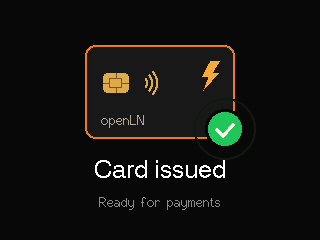


Frames 1-12 of the animation, sampled evenly across the 5.6 s scenario.
08Card wiped (wiping a card)
The Wipe Card flow. Wiping card and Keep the card on the reader, with the card graphic and a four-step tracker (Read, Authenticate, Reset, Erase). A red erase beam crosses the card as the last step runs. The finale shows a blank grey card with a green check badge, Card wiped, and Blank and ready to issue again. The badge waits for the erase beam to exit before it pops.

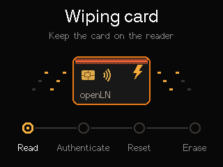
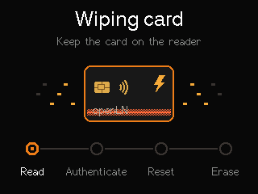
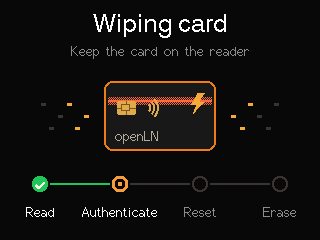
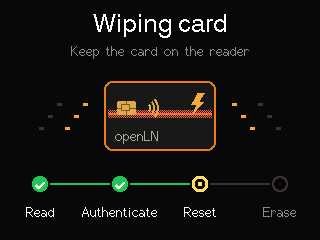


Frames 1-12 of the animation, sampled evenly across the 6.0 s scenario.
09Pairing beacon (BLE)
The BLE pairing beacon. A Bluetooth rune inside pulsing orange radar rings, the device name shown large (RIC-7F3A is the sample name in these frames), and the instruction Open openln.com/app, Link device, and choose this name. Appears whenever the unit is not yet linked, on first boot or after the WiFi credentials were wiped from the connect screen. It runs until the device is linked, and a real device shows its own BLE name.

Frames 1-12 of the animation, sampled evenly across the 4.8 s scenario.
10Connecting to WiFi
WiFi join and linking, in three phases: Connecting to WiFi with the network name and a red Cancel button; Linking to openLN and Secure connection with the WiFi arcs sparking; and Reconnecting to openLN and Saved settings kept. Retrying. with the arcs dimmed. Runs at boot and after WiFi loss; the link phase runs through the TLS handshake and auth.
Frames 1-16 of the animation, sampled evenly across the 7.0 s scenario.
11Firmware update
The firmware update, in three phases: Checking updates and Secure connection to openLN with a spinning orange tick ring; Updating firmware from v1.0.13 to v1.0.14 with the progress ring, percent, and a Do not disconnect power footer with a lightning bolt; and Update verified and Restarting device with a green check ring. Appears on OTA checks: automatic at boot and roughly every 15 minutes, or a manual check from the Firmware & Updates page. The version strings here are sample values.


Frames 1-16 of the animation, sampled evenly across the 7.3 s scenario.